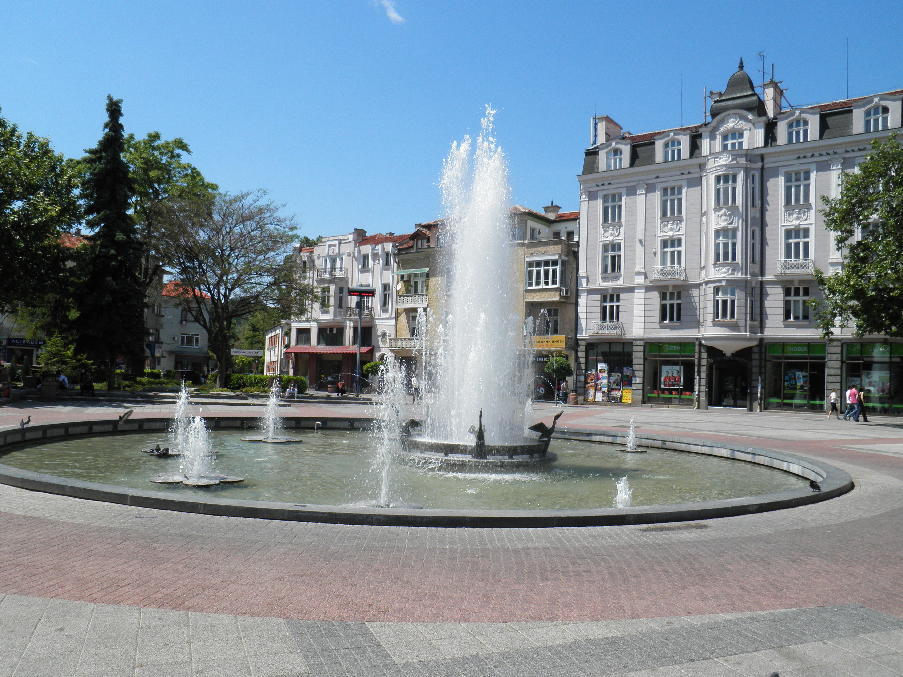

Plovdiv is one of the oldest cities in Europe, dating back as far as 4.000 Years B.C.
It has won the award of Cultural Center of Europe many times over thanks to the many Concert Venues, Art and Music Festivals, Theaters.
The city is also filled with street performers, musicians, a wide host of street food vendors and other activities that a visitor may find amusing.
In Plovdiv you find a big collection of Churches and Mosques, notable among them the Central Mosque which is situated in the city center and a big Catholic
Church a short walk from the town square. Though not all of them are operating they are worth a visit because some of them date back even hundreds of years.
The perfect place for Old meets New lovers.
Plovdiv's Town Square
At the top of this hill you will find the statue of Phillip of Macedon and a fairly large Square
At the top of the Old Town you will find the ancient fort ruins that have protected the city for many centuries past
This hill gets its' name because it is situated in the center of the Medical University of Plovdiv and all its' faculties, it also has a small square at the top
| Favorite Bands and Artists |
|---|
| Iron Maiden |
| Judas Priest |
| Jimi Hendrix |
| Laura Branigan |
| Rory Galagher |